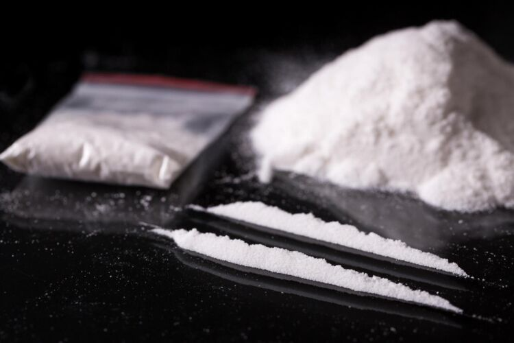

Methamphetamine

Methamphetamine is a central nervous system (CNS) stimulant that is primarily used as a recreational or performance-enhancing drug and less commonly as a second-line treatment for attention deficit hyperactivity disorder (ADHD). It has also been researched as a potential treatment for traumatic brain injury. Methamphetamine was discovered in 1893 and exists as two enantiomers: levo-methamphetamine and dextro-methamphetamine. Methamphetamine properly refers to a specific chemical substance, the racemic free base, which is an equal mixture of levomethamphetamine and dextromethamphetamine in their pure amine forms, but the hydrochloride salt, commonly called crystal meth, is widely used. Methamphetamine is rarely prescribed over concerns involving its potential for misuse as an aphrodisiac and euphoriant, among other concerns, as well as the availability of other drugs with comparable effects and treatment efficacy such as dextroamphetamine and lisdexamfetamine. While pharmaceutical formulations of methamphetamine in the United States are labeled as methamphetamine hydrochloride, they contain dextromethamphetamine as the active ingredient.Dextromethamphetamine is a stronger CNS stimulant than levomethamphetamine.
Cocaine

Cocaine, chemically formulated as C17H21NO4, is a stimulant drug, deriving from the two species of coca leaves found predominantly in South America: Erythroxylum and Erythroxylum novogranatense. Cocaine is extremely powerful as a stimulant and possesses highly addictive qualities. However, cocaine as we know it today in the UK, as a Class A illegal drug, has organic roots. It was, and still is, used by the indigenous people of South America for thousands of years in its raw coca leaf form, with inhabitants chewing it for its stimulant effects, as well as for numbing effects to carry out early surgical procedures. It was not until the arrival of the Spanish that the leaf was outlawed, until they realised that the indigenous people could scarcely function without it. As they needed labour for their mines, they reinstated growth and use of the leaf, after which they began to accept the coca leaf as tax payments. The history of the coca leaf does not start here, however, with the coca leaf being archaeologically documented as far back as 5000 BC. Only just over a century ago was cocaine hydrochloride, the powdered form of cocaine, chemically isolated from the leaf, and mainly used in different medications to treat illnesses, and as an anaesthetic due to its nerve-blocking, numbing effects. From the 19th century, it was used to treat toothache, dandruff and other ailments, as well as being used in cigarettes and, of course, in the original recipe for Coca-Cola.